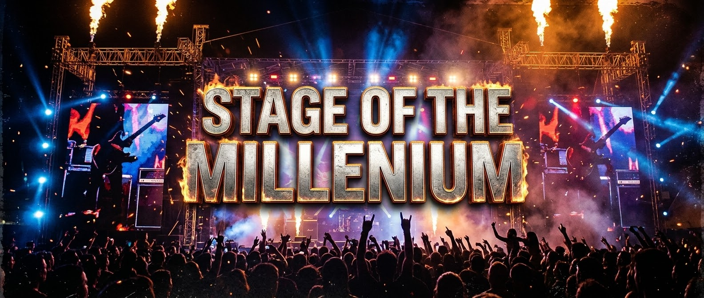
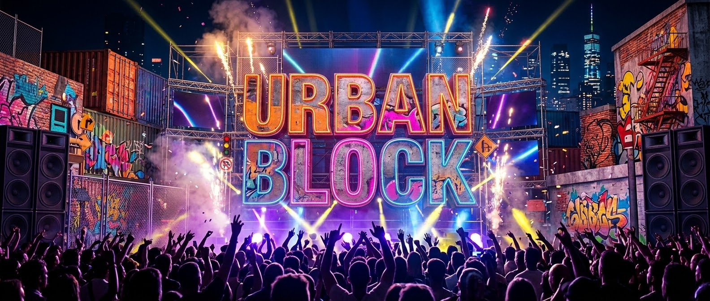
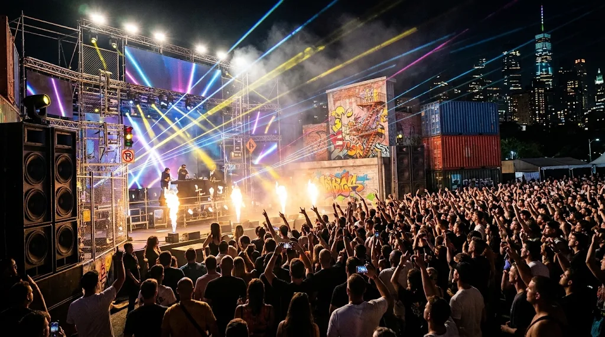
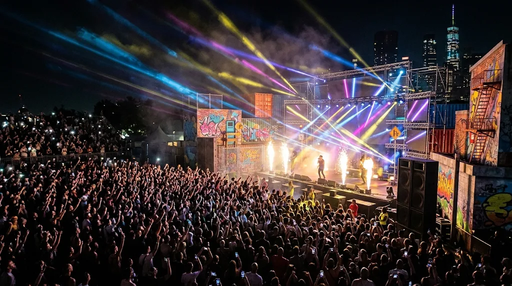
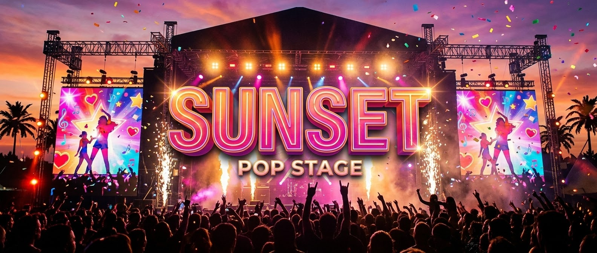
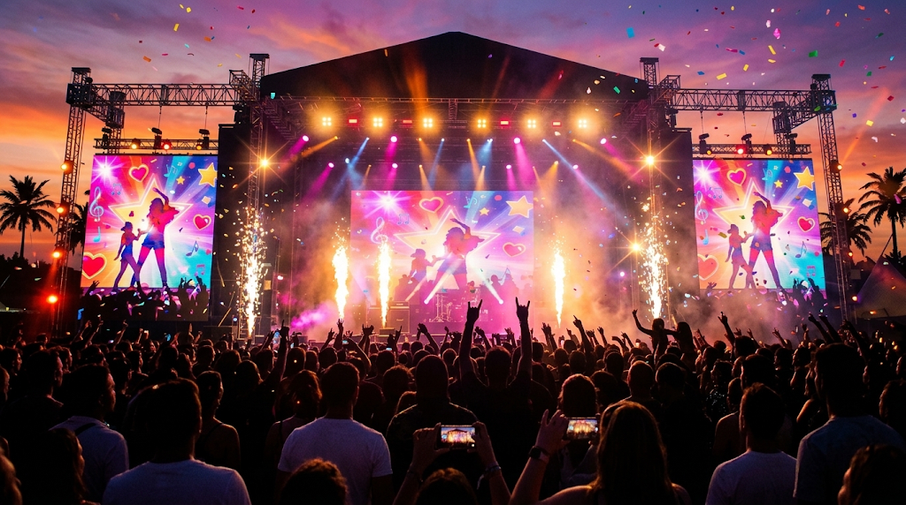
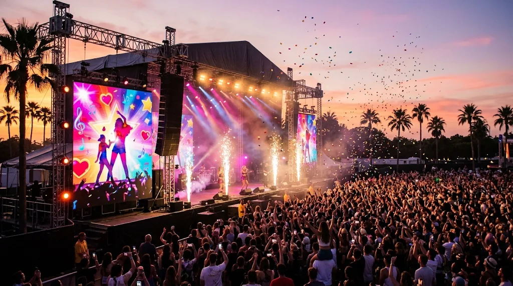

En este impresionante escenario de Rock n' Roll y grandes producciones en vivo, el público
podrá vibrar con espectáculos inolvidables.
Contará con potentes efectos visuales y sonido de alta fidelidad, donde actuará como cabeza de cartel el artista
canario Lucho RK,
quien presentará sus mayores éxitos combinando ritmos urbanos con una energía arrolladora.



Espacio dedicado íntegramente a la esencia de la música urbana, el drill y la cultura
de calle.
Diseñado con un formato envolvente para vivir de cerca cada beat, este escenario acogerá la esperada actuación
de Beny JR,
brindando un directo cargado de autenticidad y rimas contundentes.



El escenario ideal para conectar con el mejor pop latino contemporáneo y vibrantes fusiones
melódicas.
Un entorno al aire libre concebido para la puesta de sol donde el referente internacional Trueno
ofrecerá un directo enérgico repleto de fuerza escénica y conexión con los asistentes.